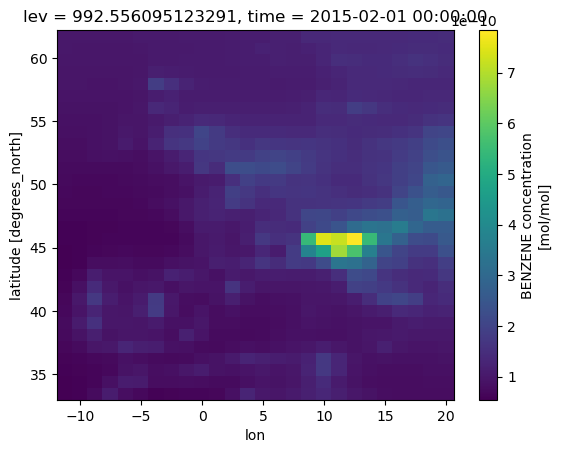

Extract CESM SSP
Contents
Extract CESM SSP¶
Notebook to extact variables on a specified domain from a CESM WACCM SSP
Imports¶
#Import something here
import xarray as xr
import matplotlib.pyplot as plt
Data Ingest¶
archive_dir = '/glade/campaign/collections/cmip/CMIP6/timeseries-cmip6/'
casename = 'b.e21.BWSSP370cmip6.f09_g17.CMIP6-SSP3-7.0-WACCM.001'
monthly = '/atm/proc/tseries/month_1/'
date_range = '.201501-206412.nc'
domain boundaries are: Lon -10.25 to 19 Lat 35 to 60
I’m hoping to use 2006 to 2014 for my historic simulations. For the future, I’m planning to run:
2046-2054 from SSP1-2.6, SSP2-4.5, SSP3-7.0
datashare = '/glade/p/datashare/marsh/waccm_cmip6/'
outdir = 'SSP3-7.0-WACCM.001/'
lat_min = 33.
lat_max = 62.
lon_min = -12.
lon_max = 21.
out_start = "2015-02-01"
out_stop = "2015-03-01"
species_list = '../notes/waccm_species_to_select.txt'
file1 = open(species_list, 'r')
for species in file1:
ncfile = archive_dir+casename+monthly+casename+'.cam.h0.'+species.strip()+date_range
print(species.strip())
file1.close()
BENZENE
BIGALK
BIGENE
C2H4
C2H5OH
C2H6
C3H6
C3H8
CH3COCH3
CH3OH
CH3OOH
CH4
CO
CRESOL
DMS
H2O2
HNO3
HO2NO2
HYAC
MACR
MEK
MPAN
MVK
N2O
N2O5
NH3
NO
NO2
O3
PAN
SO2
TOLUENE
bc_a1
bc_a4
dst_a1
dst_a2
dst_a3
ncl_a1
ncl_a2
ncl_a3
num_a1
num_a2
num_a3
pom_a1
so4_a1
so4_a2
so4_a3
soa1_a1
soa1_a2
soa2_a1
soa2_a2
soa3_a1
soa3_a2
soa4_a1
soa4_a2
soa5_a1
soa5_a2
ds = xr.open_dataset('../data/test.nc')
ds = ds.roll(lon=144, roll_coords=True)
lon = ds['lon']
ds['lon'] = xr.where(lon >= 180, lon-360, lon)
ds0 = ds.sel(time=slice(out_start, out_stop), \
lat=slice(lat_min, lat_max), \
lon=slice(lon_min, lon_max))
---------------------------------------------------------------------------
TypeError Traceback (most recent call last)
<ipython-input-36-cf4ddbe2ec53> in <module>
----> 1 ds0 = ds.sel(time=slice(out_dates), \
2 lat=slice(lat_min, lat_max), \
3 lon=slice(lon_min, lon_max))
/glade/work/marsh/miniconda3/envs/default/lib/python3.9/site-packages/xarray/core/dataset.py in sel(self, indexers, method, tolerance, drop, **indexers_kwargs)
2472 """
2473 indexers = either_dict_or_kwargs(indexers, indexers_kwargs, "sel")
-> 2474 pos_indexers, new_indexes = remap_label_indexers(
2475 self, indexers=indexers, method=method, tolerance=tolerance
2476 )
/glade/work/marsh/miniconda3/envs/default/lib/python3.9/site-packages/xarray/core/coordinates.py in remap_label_indexers(obj, indexers, method, tolerance, **indexers_kwargs)
419 }
420
--> 421 pos_indexers, new_indexes = indexing.remap_label_indexers(
422 obj, v_indexers, method=method, tolerance=tolerance
423 )
/glade/work/marsh/miniconda3/envs/default/lib/python3.9/site-packages/xarray/core/indexing.py in remap_label_indexers(data_obj, indexers, method, tolerance)
115 for dim, index in indexes.items():
116 labels = grouped_indexers[dim]
--> 117 idxr, new_idx = index.query(labels, method=method, tolerance=tolerance)
118 pos_indexers[dim] = idxr
119 if new_idx is not None:
/glade/work/marsh/miniconda3/envs/default/lib/python3.9/site-packages/xarray/core/indexes.py in query(self, labels, method, tolerance)
196
197 if isinstance(label, slice):
--> 198 indexer = _query_slice(index, label, coord_name, method, tolerance)
199 elif is_dict_like(label):
200 raise ValueError(
/glade/work/marsh/miniconda3/envs/default/lib/python3.9/site-packages/xarray/core/indexes.py in _query_slice(index, label, coord_name, method, tolerance)
89 "cannot use ``method`` argument if any indexers are slice objects"
90 )
---> 91 indexer = index.slice_indexer(
92 _sanitize_slice_element(label.start),
93 _sanitize_slice_element(label.stop),
/glade/work/marsh/miniconda3/envs/default/lib/python3.9/site-packages/pandas/core/indexes/base.py in slice_indexer(self, start, end, step, kind)
5275 slice(1, 3, None)
5276 """
-> 5277 start_slice, end_slice = self.slice_locs(start, end, step=step, kind=kind)
5278
5279 # return a slice
/glade/work/marsh/miniconda3/envs/default/lib/python3.9/site-packages/pandas/core/indexes/base.py in slice_locs(self, start, end, step, kind)
5480 end_slice = None
5481 if end is not None:
-> 5482 end_slice = self.get_slice_bound(end, "right", kind)
5483 if end_slice is None:
5484 end_slice = len(self)
/glade/work/marsh/miniconda3/envs/default/lib/python3.9/site-packages/pandas/core/indexes/base.py in get_slice_bound(self, label, side, kind)
5388 # we need to look up the label
5389 try:
-> 5390 slc = self.get_loc(label)
5391 except KeyError as err:
5392 try:
/glade/work/marsh/miniconda3/envs/default/lib/python3.9/site-packages/xarray/coding/cftimeindex.py in get_loc(self, key, method, tolerance)
464 return self._get_string_slice(key)
465 else:
--> 466 return pd.Index.get_loc(self, key, method=method, tolerance=tolerance)
467
468 def _maybe_cast_slice_bound(self, label, side, kind=None):
/glade/work/marsh/miniconda3/envs/default/lib/python3.9/site-packages/pandas/core/indexes/base.py in get_loc(self, key, method, tolerance)
3078 casted_key = self._maybe_cast_indexer(key)
3079 try:
-> 3080 return self._engine.get_loc(casted_key)
3081 except KeyError as err:
3082 raise KeyError(key) from err
pandas/_libs/index.pyx in pandas._libs.index.IndexEngine.get_loc()
pandas/_libs/index.pyx in pandas._libs.index.IndexEngine.get_loc()
TypeError: '{'2015-02-01', '2015-03-01'}' is an invalid key
ds0.BENZENE.isel(time=0,lev=69).plot()
plt.show()

ds0
<xarray.Dataset>
Dimensions: (time: 2, lev: 70, lat: 31, lon: 26, ilev: 71, nbnd: 2, zlon: 1)
Coordinates:
* ilev (ilev) float64 4.5e-06 7.42e-06 1.223e-05 ... 985.1 1e+03
* lat (lat) float64 33.46 34.4 35.34 36.28 ... 59.84 60.79 61.73
* lev (lev) float64 5.96e-06 9.827e-06 1.62e-05 ... 976.3 992.6
* lon (lon) float64 -11.25 -10.0 -8.75 -7.5 ... 17.5 18.75 20.0
* time (time) object 2015-02-01 00:00:00 2015-03-01 00:00:00
* zlon (zlon) float64 0.0
Dimensions without coordinates: nbnd
Data variables: (12/27)
BENZENE (time, lev, lat, lon) float32 3.708e-37 ... 1.869e-10
P0 float64 1e+05
ch4vmr (time) float64 1.843e-06 1.842e-06
co2vmr (time) float64 0.0004002 0.0004006
date (time) float64 2.015e+07 2.015e+07
date_written (time) object b'03/02/19' b'03/02/19'
... ...
nscur (time) float64 0.0 0.0
nsteph (time) float64 1.488e+03 2.832e+03
sol_tsi (time) float64 -1.0 -1.0
time_bnds (time, nbnd) object 2015-01-01 00:00:00 ... 2015-03-01 00:0...
time_written (time) object b'13:55:25' b'14:22:31'
zlon_bnds (zlon, nbnd) float64 0.0 358.8
Attributes:
Conventions: CF-1.0
source: CAM
case: b.e21.BWSSP370cmip6.f09_g17.CMIP6-SSP3-7.0-WACCM.001
logname: cmip6
host: cheyenne2
initial_file: b.e21.BWHIST.f09_g17.CMIP6-historical-WACCM.001.cam.i....
topography_file: /glade/p/cesmdata/cseg/inputdata/atm/cam/topo/fv_0.9x1...
model_doi_url: https://doi.org/10.5065/D67H1H0V
time_period_freq: month_1
history: Tue Feb 15 12:17:25 2022: ncks -d time,0,2 /glade/camp...
NCO: netCDF Operators version 4.9.5 (Homepage = http://nco....xarray.Dataset
- time: 2
- lev: 70
- lat: 31
- lon: 26
- ilev: 71
- nbnd: 2
- zlon: 1
- ilev(ilev)float644.5e-06 7.42e-06 ... 985.1 1e+03
- long_name :
- hybrid level at interfaces (1000*(A+B))
- units :
- hPa
- positive :
- down
- standard_name :
- atmosphere_hybrid_sigma_pressure_coordinate
- formula_terms :
- a: hyai b: hybi p0: P0 ps: PS
array([4.500500e-06, 7.420100e-06, 1.223370e-05, 2.017000e-05, 3.325450e-05, 5.482750e-05, 9.039800e-05, 1.490400e-04, 2.457200e-04, 4.051250e-04, 6.679400e-04, 1.101265e-03, 1.815650e-03, 2.993500e-03, 4.963000e-03, 8.150651e-03, 1.347700e-02, 2.231900e-02, 3.679650e-02, 6.066500e-02, 9.915650e-02, 1.573900e-01, 2.388500e-01, 3.452000e-01, 4.751350e-01, 6.318050e-01, 8.291550e-01, 1.082740e+00, 1.406850e+00, 1.818850e+00, 2.339800e+00, 2.995050e+00, 3.814700e+00, 4.834450e+00, 6.096350e+00, 7.649350e+00, 9.550100e+00, 1.186400e+01, 1.466550e+01, 1.803800e+01, 2.207550e+01, 2.688250e+01, 3.257350e+01, 3.927300e+01, 4.711450e+01, 5.624050e+01, 6.680050e+01, 8.070142e+01, 9.494104e+01, 1.116932e+02, 1.314013e+02, 1.545868e+02, 1.818634e+02, 2.139528e+02, 2.517044e+02, 2.961172e+02, 3.483666e+02, 4.098352e+02, 4.821499e+02, 5.672244e+02, 6.523330e+02, 7.304459e+02, 7.963631e+02, 8.453537e+02, 8.737159e+02, 9.003246e+02, 9.249645e+02, 9.474323e+02, 9.675386e+02, 9.851122e+02, 1.000000e+03]) - lat(lat)float6433.46 34.4 35.34 ... 60.79 61.73
- long_name :
- latitude
- units :
- degrees_north
array([33.455497, 34.397906, 35.340314, 36.282723, 37.225131, 38.167539, 39.109948, 40.052356, 40.994764, 41.937173, 42.879581, 43.82199 , 44.764398, 45.706806, 46.649215, 47.591623, 48.534031, 49.47644 , 50.418848, 51.361257, 52.303665, 53.246073, 54.188482, 55.13089 , 56.073298, 57.015707, 57.958115, 58.900524, 59.842932, 60.78534 , 61.727749]) - lev(lev)float645.96e-06 9.827e-06 ... 976.3 992.6
- long_name :
- hybrid level at midpoints (1000*(A+B))
- units :
- hPa
- positive :
- down
- standard_name :
- atmosphere_hybrid_sigma_pressure_coordinate
- formula_terms :
- a: hyam b: hybm p0: P0 ps: PS
array([5.960300e-06, 9.826900e-06, 1.620185e-05, 2.671225e-05, 4.404100e-05, 7.261275e-05, 1.197190e-04, 1.973800e-04, 3.254225e-04, 5.365325e-04, 8.846025e-04, 1.458457e-03, 2.404575e-03, 3.978250e-03, 6.556826e-03, 1.081383e-02, 1.789800e-02, 2.955775e-02, 4.873075e-02, 7.991075e-02, 1.282732e-01, 1.981200e-01, 2.920250e-01, 4.101675e-01, 5.534700e-01, 7.304800e-01, 9.559475e-01, 1.244795e+00, 1.612850e+00, 2.079325e+00, 2.667425e+00, 3.404875e+00, 4.324575e+00, 5.465400e+00, 6.872850e+00, 8.599725e+00, 1.070705e+01, 1.326475e+01, 1.635175e+01, 2.005675e+01, 2.447900e+01, 2.972800e+01, 3.592325e+01, 4.319375e+01, 5.167750e+01, 6.152050e+01, 7.375096e+01, 8.782123e+01, 1.033171e+02, 1.215472e+02, 1.429940e+02, 1.682251e+02, 1.979081e+02, 2.328286e+02, 2.739108e+02, 3.222419e+02, 3.791009e+02, 4.459926e+02, 5.246872e+02, 6.097787e+02, 6.913894e+02, 7.634045e+02, 8.208584e+02, 8.595348e+02, 8.870202e+02, 9.126445e+02, 9.361984e+02, 9.574855e+02, 9.763254e+02, 9.925561e+02]) - lon(lon)float64-11.25 -10.0 -8.75 ... 18.75 20.0
array([-11.25, -10. , -8.75, -7.5 , -6.25, -5. , -3.75, -2.5 , -1.25, 0. , 1.25, 2.5 , 3.75, 5. , 6.25, 7.5 , 8.75, 10. , 11.25, 12.5 , 13.75, 15. , 16.25, 17.5 , 18.75, 20. ]) - time(time)object2015-02-01 00:00:00 2015-03-01 0...
- long_name :
- time
- bounds :
- time_bnds
array([cftime.DatetimeNoLeap(2015, 2, 1, 0, 0, 0, 0, has_year_zero=True), cftime.DatetimeNoLeap(2015, 3, 1, 0, 0, 0, 0, has_year_zero=True)], dtype=object) - zlon(zlon)float640.0
- long_name :
- longitude
- units :
- degrees_east
- bounds :
- zlon_bnds
array([0.])
- BENZENE(time, lev, lat, lon)float323.708e-37 3.708e-37 ... 1.869e-10
- mdims :
- 1
- units :
- mol/mol
- mixing_ratio :
- dry
- long_name :
- BENZENE concentration
- cell_methods :
- time: mean
array([[[[3.70834110e-37, 3.70834110e-37, 3.70834177e-37, ..., 3.70839289e-37, 3.70835612e-37, 3.70836509e-37], [3.70834110e-37, 3.70834110e-37, 3.70834133e-37, ..., 3.70844536e-37, 3.70836532e-37, 3.70836576e-37], [3.70834110e-37, 3.70834110e-37, 3.70834110e-37, ..., 3.70838392e-37, 3.70836890e-37, 3.70836958e-37], ..., [3.70902919e-37, 3.70937649e-37, 3.70993679e-37, ..., 3.71032377e-37, 3.71035807e-37, 3.71043677e-37], [3.70928210e-37, 3.70936214e-37, 3.70926394e-37, ..., 3.71026346e-37, 3.71020315e-37, 3.71008746e-37], [3.70920991e-37, 3.70939779e-37, 3.70936057e-37, ..., 3.70977155e-37, 3.70974397e-37, 3.71012535e-37]], [[3.71036996e-37, 3.71065739e-37, 3.71098473e-37, ..., 3.71258625e-37, 3.71220286e-37, 3.71231541e-37], [3.71034597e-37, 3.71059461e-37, 3.71090514e-37, ..., 3.71234209e-37, 3.71251271e-37, 3.71253648e-37], [3.71046659e-37, 3.71068228e-37, 3.71098003e-37, ..., 3.71220039e-37, 3.71266607e-37, 3.71280104e-37], ... 1.86421115e-10, 1.95607502e-10, 2.08514719e-10], [1.13334932e-10, 1.15429416e-10, 1.17522589e-10, ..., 1.76958365e-10, 1.86451785e-10, 2.00508693e-10], [1.14753436e-10, 1.17049620e-10, 1.18770382e-10, ..., 1.68960179e-10, 1.75075232e-10, 1.84829332e-10]], [[6.46326395e-11, 6.57508492e-11, 7.21015608e-11, ..., 9.91118992e-11, 9.49673049e-11, 9.73011602e-11], [6.59685293e-11, 6.62384800e-11, 6.84209911e-11, ..., 8.98206509e-11, 8.70155406e-11, 8.82751719e-11], [6.79043557e-11, 6.79574938e-11, 6.96521243e-11, ..., 8.65522237e-11, 8.26372928e-11, 8.13206655e-11], ..., [1.12517981e-10, 1.15173933e-10, 1.18241722e-10, ..., 1.96325914e-10, 1.99213659e-10, 2.12785511e-10], [1.13545333e-10, 1.15633121e-10, 1.17754181e-10, ..., 1.80423010e-10, 1.89215671e-10, 2.04379041e-10], [1.14883693e-10, 1.17204149e-10, 1.18970014e-10, ..., 1.70871248e-10, 1.76260659e-10, 1.86899385e-10]]]], dtype=float32) - P0()float641e+05
- long_name :
- reference pressure
- units :
- Pa
array(100000.)
- ch4vmr(time)float641.843e-06 1.842e-06
- long_name :
- ch4 volume mixing ratio
array([1.843329e-06, 1.842479e-06])
- co2vmr(time)float640.0004002 0.0004006
- long_name :
- co2 volume mixing ratio
array([0.0004 , 0.000401])
- date(time)float642.015e+07 2.015e+07
- long_name :
- current date (YYYYMMDD)
array([20150201., 20150301.])
- date_written(time)objectb'03/02/19' b'03/02/19'
array([b'03/02/19', b'03/02/19'], dtype=object)
- datesec(time)float640.0 0.0
- long_name :
- current seconds of current date
array([0., 0.])
- f11vmr(time)float642.323e-10 2.319e-10
- long_name :
- f11 volume mixing ratio
array([2.322949e-10, 2.319373e-10])
- f12vmr(time)float645.192e-10 5.188e-10
- long_name :
- f12 volume mixing ratio
array([5.191636e-10, 5.188194e-10])
- gw(lat)float64...
- long_name :
- latitude weights
array([0.013723, 0.013572, 0.013417, 0.013259, 0.013097, 0.012931, 0.012763, 0.01259 , 0.012414, 0.012235, 0.012053, 0.011867, 0.011678, 0.011486, 0.011291, 0.011093, 0.010891, 0.010687, 0.01048 , 0.01027 , 0.010058, 0.009842, 0.009624, 0.009403, 0.00918 , 0.008954, 0.008726, 0.008496, 0.008263, 0.008028, 0.007791]) - hyai(ilev)float644.5e-09 7.42e-09 ... 0.0 0.0
- long_name :
- hybrid A coefficient at layer interfaces
array([4.500500e-09, 7.420100e-09, 1.223370e-08, 2.017000e-08, 3.325450e-08, 5.482750e-08, 9.039800e-08, 1.490400e-07, 2.457200e-07, 4.051250e-07, 6.679400e-07, 1.101265e-06, 1.815650e-06, 2.993500e-06, 4.963000e-06, 8.150651e-06, 1.347700e-05, 2.231900e-05, 3.679650e-05, 6.066500e-05, 9.915650e-05, 1.573900e-04, 2.388500e-04, 3.452000e-04, 4.751350e-04, 6.318050e-04, 8.291550e-04, 1.082740e-03, 1.406850e-03, 1.818850e-03, 2.339800e-03, 2.995050e-03, 3.814700e-03, 4.834450e-03, 6.096350e-03, 7.649350e-03, 9.550100e-03, 1.186400e-02, 1.466550e-02, 1.803800e-02, 2.207550e-02, 2.688250e-02, 3.257350e-02, 3.927300e-02, 4.711450e-02, 5.624050e-02, 6.680050e-02, 8.070142e-02, 9.494104e-02, 1.116932e-01, 1.314013e-01, 1.545868e-01, 1.818634e-01, 1.745980e-01, 1.660507e-01, 1.559952e-01, 1.441654e-01, 1.302483e-01, 1.138756e-01, 9.461386e-02, 7.534445e-02, 5.765894e-02, 4.273464e-02, 3.164268e-02, 2.522122e-02, 1.919674e-02, 1.361803e-02, 8.531089e-03, 3.978818e-03, 0.000000e+00, 0.000000e+00]) - hyam(lev)float645.96e-09 9.827e-09 ... 0.001989 0.0
- long_name :
- hybrid A coefficient at layer midpoints
array([5.960300e-09, 9.826900e-09, 1.620185e-08, 2.671225e-08, 4.404100e-08, 7.261275e-08, 1.197190e-07, 1.973800e-07, 3.254225e-07, 5.365325e-07, 8.846025e-07, 1.458457e-06, 2.404575e-06, 3.978250e-06, 6.556826e-06, 1.081383e-05, 1.789800e-05, 2.955775e-05, 4.873075e-05, 7.991075e-05, 1.282732e-04, 1.981200e-04, 2.920250e-04, 4.101675e-04, 5.534700e-04, 7.304800e-04, 9.559475e-04, 1.244795e-03, 1.612850e-03, 2.079325e-03, 2.667425e-03, 3.404875e-03, 4.324575e-03, 5.465400e-03, 6.872850e-03, 8.599725e-03, 1.070705e-02, 1.326475e-02, 1.635175e-02, 2.005675e-02, 2.447900e-02, 2.972800e-02, 3.592325e-02, 4.319375e-02, 5.167750e-02, 6.152050e-02, 7.375096e-02, 8.782123e-02, 1.033171e-01, 1.215472e-01, 1.429940e-01, 1.682251e-01, 1.782307e-01, 1.703243e-01, 1.610229e-01, 1.500803e-01, 1.372069e-01, 1.220619e-01, 1.042447e-01, 8.497915e-02, 6.650170e-02, 5.019679e-02, 3.718866e-02, 2.843195e-02, 2.220898e-02, 1.640738e-02, 1.107456e-02, 6.254954e-03, 1.989409e-03, 0.000000e+00]) - hybi(ilev)float640.0 0.0 0.0 ... 0.9636 0.9851 1.0
- long_name :
- hybrid B coefficient at layer interfaces
array([0. , 0. , 0. , 0. , 0. , 0. , 0. , 0. , 0. , 0. , 0. , 0. , 0. , 0. , 0. , 0. , 0. , 0. , 0. , 0. , 0. , 0. , 0. , 0. , 0. , 0. , 0. , 0. , 0. , 0. , 0. , 0. , 0. , 0. , 0. , 0. , 0. , 0. , 0. , 0. , 0. , 0. , 0. , 0. , 0. , 0. , 0. , 0. , 0. , 0. , 0. , 0. , 0. , 0.039355, 0.085654, 0.140122, 0.204201, 0.279587, 0.368274, 0.472611, 0.576989, 0.672787, 0.753628, 0.813711, 0.848495, 0.881128, 0.911346, 0.938901, 0.96356 , 0.985112, 1. ]) - hybm(lev)float640.0 0.0 0.0 ... 0.9743 0.9926
- long_name :
- hybrid B coefficient at layer midpoints
array([0. , 0. , 0. , 0. , 0. , 0. , 0. , 0. , 0. , 0. , 0. , 0. , 0. , 0. , 0. , 0. , 0. , 0. , 0. , 0. , 0. , 0. , 0. , 0. , 0. , 0. , 0. , 0. , 0. , 0. , 0. , 0. , 0. , 0. , 0. , 0. , 0. , 0. , 0. , 0. , 0. , 0. , 0. , 0. , 0. , 0. , 0. , 0. , 0. , 0. , 0. , 0. , 0.019677, 0.062504, 0.112888, 0.172162, 0.241894, 0.323931, 0.420442, 0.5248 , 0.624888, 0.713208, 0.78367 , 0.831103, 0.864811, 0.896237, 0.925124, 0.951231, 0.974336, 0.992556]) - mdt()float641.8e+03
- long_name :
- timestep
- units :
- s
array(1800.)
- n2ovmr(time)float643.278e-07 3.279e-07
- long_name :
- n2o volume mixing ratio
array([3.278179e-07, 3.278564e-07])
- nbdate()float642.015e+07
- long_name :
- base date (YYYYMMDD)
array(20150101.)
- nbsec()float640.0
- long_name :
- seconds of base date
array(0.)
- ndbase()float640.0
- long_name :
- base day
array(0.)
- ndcur(time)float6431.0 59.0
- long_name :
- current day (from base day)
array([31., 59.])
- nsbase()float640.0
- long_name :
- seconds of base day
array(0.)
- nscur(time)float640.0 0.0
- long_name :
- current seconds of current day
array([0., 0.])
- nsteph(time)float641.488e+03 2.832e+03
- long_name :
- current timestep
array([1488., 2832.])
- sol_tsi(time)float64-1.0 -1.0
- long_name :
- total solar irradiance
- units :
- W/m2
array([-1., -1.])
- time_bnds(time, nbnd)object2015-01-01 00:00:00 ... 2015-03-...
- long_name :
- time interval endpoints
array([[cftime.DatetimeNoLeap(2015, 1, 1, 0, 0, 0, 0, has_year_zero=True), cftime.DatetimeNoLeap(2015, 2, 1, 0, 0, 0, 0, has_year_zero=True)], [cftime.DatetimeNoLeap(2015, 2, 1, 0, 0, 0, 0, has_year_zero=True), cftime.DatetimeNoLeap(2015, 3, 1, 0, 0, 0, 0, has_year_zero=True)]], dtype=object) - time_written(time)objectb'13:55:25' b'14:22:31'
array([b'13:55:25', b'14:22:31'], dtype=object)
- zlon_bnds(zlon, nbnd)float640.0 358.8
- long_name :
- zlon bounds
- units :
- degrees_east
array([[ 0. , 358.75]])
- Conventions :
- CF-1.0
- source :
- CAM
- case :
- b.e21.BWSSP370cmip6.f09_g17.CMIP6-SSP3-7.0-WACCM.001
- logname :
- cmip6
- host :
- cheyenne2
- initial_file :
- b.e21.BWHIST.f09_g17.CMIP6-historical-WACCM.001.cam.i.2015-01-01-00000.nc
- topography_file :
- /glade/p/cesmdata/cseg/inputdata/atm/cam/topo/fv_0.9x1.25_nc3000_Nsw042_Nrs008_Co060_Fi001_ZR_sgh30_24km_GRNL_c170103.nc
- model_doi_url :
- https://doi.org/10.5065/D67H1H0V
- time_period_freq :
- month_1
- history :
- Tue Feb 15 12:17:25 2022: ncks -d time,0,2 /glade/campaign/collections/cmip/CMIP6/timeseries-cmip6/b.e21.BWSSP370cmip6.f09_g17.CMIP6-SSP3-7.0-WACCM.001/atm/proc/tseries/month_1/b.e21.BWSSP370cmip6.f09_g17.CMIP6-SSP3-7.0-WACCM.001.cam.h0.BENZENE.201501-206412.nc test.nc
- NCO :
- netCDF Operators version 4.9.5 (Homepage = http://nco.sf.net, Code = http://github.com/nco/nco)